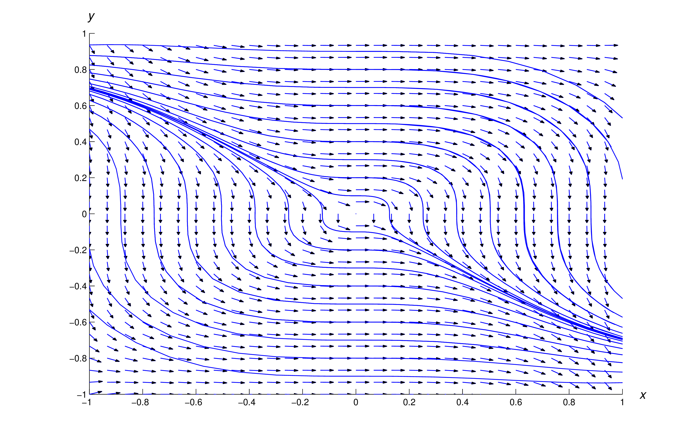

In this section it’s convenient to write first order differential
equations in the form \begin {equation} \label {eq:2.5.1}
M(x,y)\,dx+N(x,y)\,dy=0\end {equation}
This equation can be interpreted as \begin {equation} \label {eq:2.5.2}
M(x,y)+N(x,y)\,{dy\over dx}=0\end {equation}
where \(x\) is the independent variable and \(y\) is the dependent
variable, or as \begin {equation} \label {eq:2.5.3} M(x,y)\,{dx\over
dy}+N(x,y)=0\end {equation}
where \(y\) is the independent variable and \(x\) is the dependent
variable. Since the solutions of (2.5.2) and (2.5.3) will often have to be left in implicit, form we’ll say that \(F(x,y)=c\)
is an implicit solution of (2.5.1) if every differentiable function \(y=y(x)\) that satisfies \(F(x,y)=c\)
is a solution of (2.5.2) and every differentiable function \(x=x(y)\) that satisfies \(F(x,y)=c\)
is a solution of (2.5.3)
\(3y\sin x\,\displaystyle {dx\over dy}-2xy\cos x =0\)
Note that a separable equation can be written as (2.5.1) as \[ M(x)\,dx+N(y)\,dy=0\]
We’ll develop a method for solving (2.5.1) under appropriate assumptions on \(M(x,y)\) and \(N(x,y)\). This method is an
extension of the method of separation of variables (Exercise 41). Before stating it we consider an example.
Show that
\begin {equation} \label {eq:2.5.4}
\overset{F(x,y)}{\overbrace{x^4y^3+x^2y^5+2xy}} = c
\end{equation}
is an implicit solution of
\begin {equation} \label {eq:2.5.5}
(4x^3y^3+2xy^5+2y)\,dx+(3x^4y^2+5x^2y^4+2x)\,dy=0
\end {equation}
Solution
We want to show that (2.5.4) is an implicit solution of (2.5.5). To do this we will differentiate (2.5.4) implicitly with respect to \( x \) and then again with respect to \( y \) and show that both lead to (2.5.5).
This we have shown that (2.5.4) is an implicit solution of (2.5.5)
Theorem 2.5.1
If \(F=F(x,y)\) has continuous partial derivatives \(F_x(x,y)\) and \(F_y(x,y)\)
then (2.5.6) is an implicit solution of (2.5.7)
\begin {equation} \label {eq:2.5.6}
F(x,y) = c
\end {equation}
\begin {equation} \label {eq:2.5.7}
F_x(x,y)\,dx+F_y(x,y)\,dy=0
\end {equation}
Proof
Regarding \(y = y(x)\) as a function of \(x\) and differentiating (2.5.6) implicitly with respect to \(x\) yields
\[ F_x(x,y)+F_y(x,y)\,{dy\over dx}=0\]
Regarding \(x = x(y) \) as a function of \(y\) and differentiating (2.5.6) implicitly with respect to \(y\) yields
\[ F_x(x,y)\,{dx\over dy}+F_y(x,y)=0\]
Thus, (2.5.6) is an implicit solution of (2.5.7) in either of its two possible interpretations.
Exactness Condition
In calculus, we define \( F_x(x,y)dx+F_y(x,y)dy \) as the exact differential
of the function \( F(x,y) .\) A differential equation (2.5.8) is defined to be exact if there exists a function \( F(x,y) \) such that the equation can be rewritten as an exact differential of that function, i.e. as \( F_x(x,y) dx + F_y(x,y) dy\)
\begin {align} \label {eq:2.5.8}
\underset{F_x(x,y)}{\underbrace{M(x,y)}} dx
+ \underset{F_y(x,y)}{\underbrace{N(x,y)}} dy = & 0 \\
F_x(x,y) dx + F_y(x,y) dy = & 0 \label{eq:2.5.9}
\end {align}
For instance, the differential equation (2.5.5) in Example 2.5.1 is an exact differential equation. Taking the partial derivatives of the function \( F(x,y) \) in the implicit solution (2.5.4) shows the definition of
exact given in (2.5.9) to be satisfied:
Calculate the partial derivatives \( F_x(x,y) \) and \( F_y(x,y) \) in (2.5.4)
Substitute the partial derivatives into (2.5.9) to show that (2.5.5) satisfies the definition of exact differential equation
To show that the differential equation (2.5.5) in Example 2.5.1 was exact, we relied on being given the solution (2.5.4) and then finding the exact differential of that solution and verifying that it matched our differential equation.
Given an arbitrary differential equation (2.5.8), how can we determine whether it is exact without knowing the solution? We will start by assuming that \( F(x,y) \) exists that satisfies (2.5.9) then we know from calculus that the mixed partial derivatives must be equal
\begin{equation} \label{eq:2.5.10}
F_{xy}(x,y) = F_{yx}(x,y)
\end{equation}
Since exactness requires \( M(x,y)=F_x(x,y) \) and \( N(x,y)=F_y(x,y) \) this means that \( M_y(x,y) \) must equal \( N_x(x,y) \) in order for the mixed partial derivatives to be equal, since \( M_y(x,y)=F_{xy}(x,y) \) and \( N_x(x,y)=F_{yx}(x,y) .\) Therefore in order to determine if a differential equation (2.5.8) is exact, we simply compute the partial derivative with respect to \( y \) of \( M(x,y) \) and the partial derivative with respect to \( x \) of \( N(x,y) \) and determine if they are equal (exact) or not (not exact). Thus the differential equation (2.5.8) \( M(x,y) dx + N(x,y) dy = 0 \) is exact whenever
\begin{equation} \label{eq:2.5.11}
M_y(x,y) = N_x(x,y)
\end{equation}
Theorem 2.5.2[ Exactness Condition ]
Suppose \(M(x,y) \) and \(N(x,y)\) are continuous and have continuous partial
derivatives \(M_y(x,y)\) and \(N_x(x,y)\) on an open rectangle \(R.\) Then the differential equation
\[
M(x,y)\,dx+N(x,y)\,dy=0
\]
is exact on \(R\) if and only if
\begin{equation} \label {eq:2.5.12}
M_y(x,y)=N_x(x,y)
\end {equation}
To help you remember the exactness condition, observe that the
coefficients of \(dx\) and \(dy\) are differentiated in (2.5.12) with respect to the “opposite” variables; that is, the coefficient of
\(dx\) is differentiated with respect to \(y\), while the coefficient of
\(dy\) is differentiated with respect to \(x\).
Show that the equation is not exact
\[ 3x^2y\,dx+4x^3\,dy=0 \]
Solution
\begin{align*}
\underset{M(x,y)}{\underbrace{3x^2y}} dx
+ \underset{N(x,y)}{\underbrace{4x^3 }} dy = & 0 \\
\end{align*}
By the definition of exact differential equation, in order to be
exact, the equation must represent an exact differential. In other words, it must be truw that \( M(x,y)=F_x(x,y) \) and \( N(x,y)=F_y(x,y) .\) To determine this we will find \( M_y(x,y)=F_{xy}(x,y) \) and \( N_x(x,y)=F_{yx}(x,y) \) and if they are equal then the equation is exact.
\begin{align*}
M(x,y) = & 3x^2y \\
M_y(x,y) = & 3x^2 \underset{1}{\underbrace{ \frac{\partial}{\partial y} \Big( y \Big) }} = 3x^2 \\
\end{align*}
\begin{align*}
N(x,y) = & 4x^3 \\
N_x(x,y) = & 4 \underset{3x^2}{\underbrace{ \frac{\partial}{\partial x} \Big( x^3 \Big) }} = 12x^2 \\
\end{align*}
\begin{equation*}
\boxed{
M_y(x,y) = 3x^2 \ne 12x^2 = N_x(x,y)
}
\end{equation*}
Therefore the differential equation is not exact. Note that \( M_y(x,y) = N_x(x,y) \) on the vertical line \( x=0 \) only but not on an open rectangle.
Exact Procedure
The next example illustrates two possible methods for finding a function
\(F(x,y)\) that satisfies the condition \(F_x(x,y)=M(x,y)\) and \(F_y(x,y)=N(x,y)\) if
\(M(x,y)\,dx+N(x,y)\,dy = 0 \) is exact.
Therefore the differential equation is exact.
This means that there is a function \( F(x,y) \) such that \( M(x,y)=F_x(x,y) \) and \( N(x,y)=F_y(x,y) \)
\begin {equation} \label{eq:2.5.14}
M(x,y) = F_x(x,y) = 4x^3y^3+3x^2
\end {equation}
\begin {equation} \label {eq:2.5.15}
N(x,y) = F_y(x,y) = 3x^4y^2+6y^2
\end{equation}
Now we can find \( F(x,y) \) by finding the antiderivative of (2.5.14) with respect to \( x \) or by by finding the antiderivative of (2.5.15) with respect to \( y \)
\begin{align} \label{eq:2.5.16}
F(x,y) = & \int F_x(x,y) dx = \int M(x,y) dx \nonumber \\
= & \int \Big( 4x^3y^3+3x^2 \Big) dx \nonumber \\
= & 4y^3 \int \Big( x^3 \Big) dx + 3 \int \Big( x^2 \Big) dx \nonumber \\
= & 4y^3 \Big( \frac{1}{4}x^4 \Big) + 3 \Big( \frac{1}{3} x^3 \Big) + \phi(y) \nonumber \\
= & x^4 y^3 + x^3 + \phi(y)
\end{align}
Notice in (2.5.16) that instead of adding \( +c \) at the end as a constant of integration, we added \( \phi(y) \) which represents any combination of constants and \( y \) variables which were held constant when we found the antiderivative with respect to \( x .\)
Verify (2.5.16) by finding the partial derivative with respect to \( x \) and comparing the result with (2.5.14)
We already found an expression for \( F(x,y) \) in (2.5.16)
by finding the antiderivative of (2.5.14) with respect to \( x \) but we should be able to accomplish the same thing by finding the antiderivative of (2.5.15) with respect to \( y \)
\begin{align} \label{eq:2.5.17}
F(x,y) = & \int F_y(x,y) dx = \int N(x,y) dy \nonumber \\
= & \int \Big( 3x^4y^2 + 6y^2 \Big) dy \nonumber \\
= & 3x^4 \int \Big( y^2 \Big) dy + 6 \int \Big( y^2 \Big) dy \nonumber \\
= & 3x^4 \Big( \frac{1}{3}y^3 \Big) + 6 \Big( \frac{1}{3} y^3 \Big) + \psi (x) \nonumber \\
= & x^4 y^3 + 2y^3 + \psi(x)
\end{align}
Just like we did in (2.5.16), instead of adding \( + c \) at the end of (2.5.17) as a constant of integration, we added \( \psi(x) \) which represents any combination of constants and \( x \) variables which were held constant when we found the antiderivative with respect to \( y \)
Verify (2.5.17) by finding the partial derivative with respect to \( y \) and comparing the result with (2.5.15)
We now have two expressions for \( F(x,y) \) both of which are in terms of unknown functions
\( \phi = \phi(y) \) and \( \psi = \psi(x) \) that represent the "constants" of integration
\begin{equation*}
F(x,y) = x^4 y^3 + 2y^3 + \psi(x)
\quad\quad
F(x,y) = x^4 y^3 + x^3 + \phi(y)
\end{equation*}
Differentiating each expression with respect to the variable from the "constant" of integration, we obtain:
\begin{equation*}
F_x(x,y) = 4 x^3 y^3 + \psi'(x)
\quad \quad
F_y(x,y) = 3 x^4 y^2 + \phi'(y)
\end{equation*}
Now we can compare these functions with the known functions \( M(x,y) = F_x(x,y) \) (2.5.14) and \( N(x,y) = F_y(x,y) \) (2.5.15) and use them to solve for \( \psi(x) \) and \( \phi(y) \)
\begin{equation*}
\begin{array}{rllrrl}
F_x(x,y) & = & M(x,y) &\quad & F_y(x,y) & = & N(x,y) \\
4 x^3 y^3 + \psi'(x) & = & 4x^3y^3+3x^2 &\quad & 3 x^4 y^2 + \phi'(y) & = & 3x^4y^2+6y^2 \\
\psi'(x) & = & 3x^2 &\quad & \phi'(y) & = & 6y^2 \\
\psi(x) & = & 3\int x^2 dx &\quad & \phi(y) & = & 6 \int y^2 dy \\
\psi(x) & = & x^3 &\quad & \phi(y) & = & 2 y^3 \\
\end{array}
\end{equation*}
We have now found expressions for both \( \psi(x) \) and \( \phi(y) \) and you may have noticed that we took the constants of integration to be zero since there is still an arbitrary constant in the final implicit solution (2.5.6) \( F(x,y) = c \) and these constants would simplify into that one.
Substituting \( \psi(x) = x^3 \) into (2.5.17) and \( \phi(y) = 2 y^3 \) into (2.5.16) we obtain \( F(x,y) \)
\begin{equation*}
\begin{array}{rllrrl}
F(x,y) & = & x^4 y^3 + 2y^3 + \psi(x) &\quad & F(x,y) & = & x^4 y^3 + x^3 + \phi(y) \\
F(x,y) & = & x^4 y^3 + 2y^3 + x^3 &\quad & F(x,y) & = & x^4 y^3 + x^3 + 2 y^3 \\
\end{array}
\end{equation*}
Conveniently both expressions for \( F(x,y) \) agree and this is a great way to check your work so either way you opt to solve, you should get the same answer. Our final implicit solution is written in the form of (2.5.6) as \( F(x,y) = c \)
\begin{equation}
x^4 y^3 + 2y^3 + x^3 = c
\end{equation}
Which, in this case, we can solve explicitly for \( y \)
After solving explicitly for \( y = y(x) \)
\begin{equation*}
y(x) = \sqrt[3]{\frac{c-x^3}{x^4+2}}
\end{equation*}
Figure
2.5.1
shows a direction field and some
integral curves
of (2.5.13),

Figure 2.5.1
A direction field and
integral curves
for \((4x^3y^3+3x^2)\,dx+(3x^4y^2+6y^2)\,dy=0\)
Procedure For Solving An Exact Equation
\begin{equation*}
M(x,y) dx + N(x,y) dy = 0
\end{equation*}
Identify \( M(x,y) \) and \( N(x,y) \) and compute \( M_y(x,y) \) and \( N_x(x,y) \) and verify \( M_y(x,y)=N_x(x,y) \) to ensure that the equation is exact
Antidifferentiate \( M(x,y) = F_x(x,y) \) with respect to \( x \) and/or \( N(x,y) = F_y(x,y) \) with respect to \( y \) to obtain \( F(x,y) \)
\begin{align} \label{eq:2.5.20}
F(x,y) = & \int F_x(x,y) dx = \int M(x,y) dx = G_{\phi}(x,y) + \phi(y) \\
F(x,y) = & \int F_y(x,y) dx = \int N(x,y) dx = G_{\psi}(x,y) + \psi(x)
\end{align}
Differentiating with respect to the same variable to check that the antidifferentiation is correct
Differentiate with respect to the other variable to obtain expressions for \( F_x(x,y) \) and \( F_y(x,y) \) in terms of \( \psi'(x) \) and \( \phi'(y) \)
Set the new expressions equal to known expressions \( F_x(x,y) = M(x,y) \) and/or \( F_y(x,y) = N(x,y) \) and solve for \( \psi(x) \) and \( \phi(y) \)
Substitute \( \psi(x) \) and/or \( \phi(y) \) in to obtain \( F(x,y) \) and if possible verify they match. Set \( F(x,y)=c \) arbitrary constant which is an implicit solution. Solve explicitly for \( y = y(x) \) whenever possible
Many equations can be conveniently solved by either of the two methods used in Example 2.5.3. In cases where both are simple, we will antidifferentiate both so we can check our answer. However, sometimes the antidifferentiation required in one approach is more difficult than in the other. In such cases we choose the approach that requires the easier antidifferentiation.
1. Identify \( M(x,y) \) and \( N(x,y) \) and compute \( M_y(x,y) \) and \( N_x(x,y) \) and verify \( M_y(x,y)=N_x(x,y) \) to ensure that the equation is exact
Blank
2. Antidifferentiate \( M(x,y) = F_x(x,y) \) with respect to \( x \) and/or \( N(x,y) = F_y(x,y) \) with respect to \( y \) to obtain \( F(x,y) \)
Blank
3. Differentiating with respect to the same variable to check that the antidifferentiation is correct
Blank
4. Differentiate with respect to the other variable to obtain expressions for \( F_x(x,y) \) and \( F_y(x,y) \) in terms of \( \psi'(x) \) and \( \phi'(y) \)
Blank
5. Set the new expressions equal to known expressions \( F_x(x,y) = M(x,y) \) and/or \( F_y(x,y) = N(x,y) \) and solve for \( \psi(x) \) and \( \phi(y) \)
Blank
6. Substitute \( \psi(x) \) and/or \( \phi(y) \) in to obtain \( F(x,y) \) and if possible verify they match. Set \( F(x,y)=c \) arbitrary constant which is an implicit solution. Solve explicitly for \( y = y(x) \) whenever possible
Blank
We leave it to you to check that \(M_y=N_x\) on any open rectangle
where \(\tan x\) and \(\sec x\) are defined. Here we must find a function
\(F\) such that \begin {equation} \label {eq:2.5.22} F_x(x,y)=ye^{xy} \tan
x+e^{xy} \sec ^2 x \end {equation}
and \begin {equation} \label {eq:2.5.23} F_y(x,y)=xe^{xy} \tan x\end
{equation}
It’s difficult to integrate (2.5.22) with respect to \(x\), but easy to integrate (2.5.23) with respect to \(y\). This yields \begin {equation} \label {eq:2.5.24}
F(x,y)=e^{xy} \tan x+\psi (x)\end {equation}
Differentiating this with respect to \(x\) yields \[ F_x(x,y)=ye^{xy}\tan
x+e^{xy}\sec ^2x+\psi '(x)\] Comparing this with (2.5.22) shows that \(\psi '(x)=0\). Hence, \(\psi \) is a constant, which we can
take to be zero in (2.5.24), and \[ e^{xy} \tan x=c \] is an implicit solution of (2.5.21). __
Attempting to apply our procedure to an equation that isn’t exact will
lead to failure in Step 4, since the function \[ N-{\partial G\over
\partial y} \] won’t be independent of \(x\) if \(M_y\ne N_x\)
(Exercise
31
), and therefore can’t be the derivative of a function of \(y\) alone.
Here’s an example that illustrates this.
Not Exact
Verify that the equation \begin {equation} \label {eq:2.5.25}
3x^2y^2\,dx+6x^3y\,dy=0 \end {equation}
is not exact, and show that the procedure for solving exact equations
fails when applied to (2.5.25).
Solution
Here \[ M_y(x,y)=6x^2y \quad \mbox{ and } \quad N_x(x,y)=18x^2y\] so
(2.5.25) isn’t exact. Nevertheless, let’s try to find a function \(F\) such that
\begin {equation} \label {eq:2.5.26} F_x(x,y)=3x^2y^2 \end {equation}
and \begin {equation} \label {eq:2.5.27} F_y(x,y)=6x^3y\end {equation}
Integrating (2.5.26) with respect to \(x\) yields \[ F(x,y)=x^3y^2+\phi (y)\] and
differentiating this with respect to \(y\) yields \[ F_y(x,y)=2x^3y+\phi
'(y)\] For this equation to be consistent with (2.5.27), \[ 6x^3y=2x^3y+\phi '(y)\] or \[ \phi '(y)=4x^3y\] This is a
contradiction, since \(\phi '\) must be independent of \(x\). Therefore
the procedure fails.